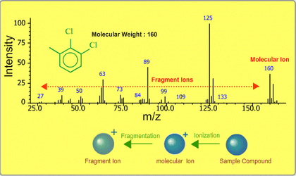

Mảnh ion

Image source: Topic 3 image sources
| Vietnamese | Mảnh ion |
|---|---|
| English | Ion fragment / Fragment ion |
| Pronunciation | /ˈaɪɑːn ˈfræɡmənt/ or /ˈfræɡmənt ˈaɪən/ |
| Word type | Danh từ (Noun) |
Meaning (Vietnamese)
Các ion nhỏ hơn tạo ra khi phân tử bị ion hóa và phân mảnh trong thiết bị phổ khối lượng.
Meaning (English)
A smaller ion formed when a molecule is ionized and breaks into fragments in a mass spectrometer.
Example
A fragment ion appears when the molecular ion breaks apart.
Mảnh ion xuất hiện khi ion phân tử bị phân mảnh.
Another definition from the notes
Mảnh ion
An ion formed when a larger ion breaks into smaller parts.
Another definition from the notes
Ion được tạo thành khi một ion lớn hơn phân tách thành các phần nhỏ hơn.
An ion formed when a larger ion breaks into smaller parts.
Source of information: Topic 3 notes (see Sources)